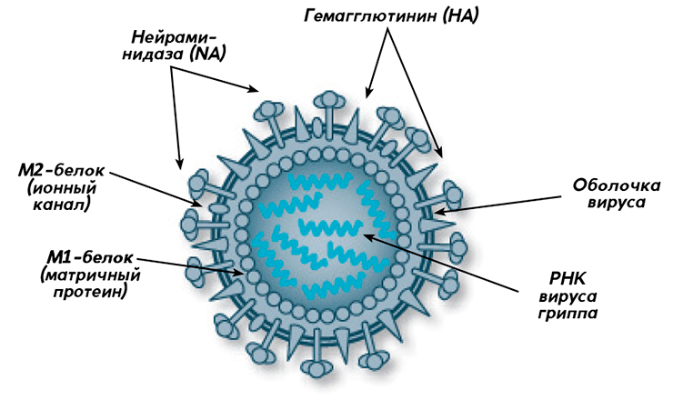
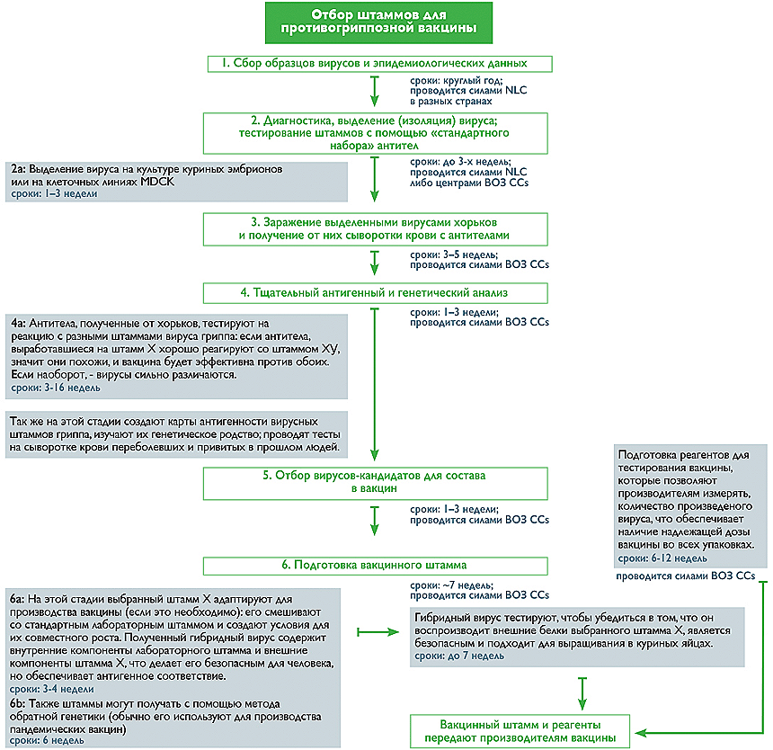
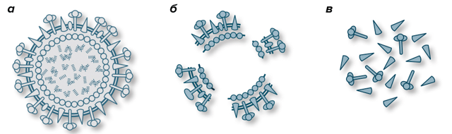
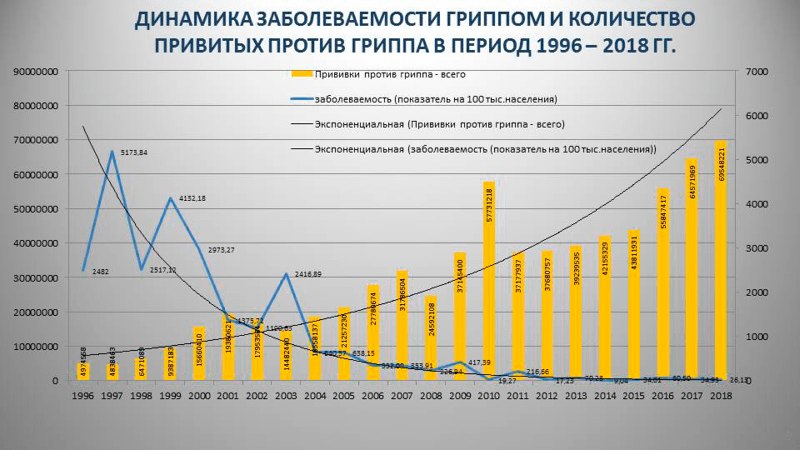

Статья на конкурс «Био/Мол/Текст» 2019
Наступила осень, а за ней придет зима с вечными простудами и гриппом, поэтому вопрос как сделать так, чтобы не болеть, снова актуален. Но если с обычными сезонными вирусами ничего не поделаешь, то уберечься от гриппа можно попытаться, например, при помощи вакцинации. И тут встают два вопроса: насколько эффективны вакцины против гриппа и какой из них лучше привиться?
Несмотря на то, что к прививкам против гриппа многие относятся довольно скептически, с каждым годом количество привитых людей растет, и если в 1998 году против гриппа привилось около 6,5 млн россиян, то спустя 20 лет прививки сделало рекордное количество жителей нашей страны – 70,8 млн (практически 50% населения)! Однако все это время нас прививали только трехкомпонентными вакцинами, при этом в других странах еще семь лет назад появились вакцины нового поколения, состоящие из четырех компонентов. В 2019 году два таких препарата — «Гриппол® Квадривалент» и «Ультрикс® Квадри» — появятся на отечественных просторах. И хотя в первую очередь ими планируют прививать группы риска (беременных, врачей, студентов, призывников, а также людей с хроническими заболеваниями), это — отличная новость для всех, ведь такие вакцины более эффективны, потому что защищают от двух штаммов вируса гриппа типа А и от обеих линий вируса типа В.
Известно три разновидности вируса гриппа, опасных для человека:
Если бы все типы вируса гриппа были похожи на тип С, больших проблем с ними не было. Однако тип А постоянно мутирует, поэтому довольно часто появляются его новые вариации (штаммы), с которыми наша иммунная система еще не знакома. Из-за этой изменчивости классификация вирусов гриппа достаточно сложная: внутри каждого типа существуют подтипы (в случае с типом В — линии), в которые объединяют штаммы вируса. Причем, штаммы подтипов могут быть как родственными (то есть эволюционно недалеко ушедшими друг от друга), так и непохожими.
Иногда различия между штаммами подтипа имеют довольно серьезные последствия: например, в феврале 2019 года циркуляция двух таких генетически неоднородных «родственников» — штаммов H3N2 — стала причиной задержки решения ВОЗ по поводу состава вакцины сезона 2019–2020. Экспертам потребовался целый месяц дополнительного мониторинга, чтобы принять решение, какой из штаммов рекомендовать для вакцины. В итоге эта задержка скажется на более поздних сроках поставки некоторых вакцин (в основном для пожилых людей старше 65 лет), которые попадут на рынки только в ноябре 2019 года.
ВОЗ называет сезонный грипп «непредсказуемой угрозой», имея в виду его быстрое распространение (то есть риск развития пандемий) и постоянную изменчивость. Ежегодно в мире регистрируется 3–5 млн случаев его тяжелого течения, 290 000 – 650 000 из которых заканчиваются смертельным исходом. В северном полушарии гриппом обычно заболевают около 5–10% населения, при этом наиболее уязвимы перед ним дети (они составляют около 20–30% заболевших), беременные женщины, пожилые люди, врачи, учителя, люди с хроническими заболеваниями и ВИЧ-инфицированные. Тяжесть течения гриппа зависит от многих факторов, из которых чаще всего выделяют возраст (смертность выше среди детей до 5 лет и пожилых), сопутствующие заболевания (ВИЧ, хронические болезни легких, сердца и т.д.) и беременность.
Причем в случае с беременными женщинами риск касается не только будущей мамы, но и ее ребенка: грипп во время беременности более чем в 7 раз повышает риск госпитализации, а также может привести к преждевременным родам (около 30% случаев), мертворождению и малому весу при рождении. Поэтому во многих странах мира (США, Великобритания, Австралия, Италия) беременным рекомендована вакцинация против гриппа. Делают это по двум причинам:
Основную роль в эволюции вирусов гриппа (рис. 1) играют антигенный дрейф (antigenic drift) и антигенный сдвиг (antigenic shift). В результате антигенного дрейфа происходит постепенное изменение свойств вируса из-за мутаций в вирусном геноме и естественного отбора наиболее «удачных» вариантов, способных с легкостью заражать животных и человека. Антигенный сдвиг связан с реассортацией и представляет собой «рождение» новой вирусной частицы от двух разных штаммов (часто в этом процессе принимают участие вирусы, заражающие различных сельскохозяйственных животных). Реассортация очень напоминает то, как у двух родителей «получаются» дети: когда два разных вириона вируса попадают в одну клетку и начинают размножаться, они могут обменяться частями своего генома. В результате получится новая вариация вируса, которая может значительно отличаться от своих предков. Скорее всего, все пандемии гриппа, в том числе и «испанка», были вызваны реассортацией вирусов. Что важно, для вируса гриппа типа В характерен только антигенный дрейф, и это делает его менее проблемным с точки зрения разработки вакцины.

Рисунок 1. Строение вируса гриппа (типы А и В)
Вирус гриппа принадлежит семейству Orthomyxoviridae, куда входят четыре рода (или типа) вируса: А, В, С и D. Наиболее опасен тип А, штаммы которого отличаются друг от друга комбинацией поверхностных антигенов гемагглютинина (Н) — известно 18 его подтипов — и нейраминидазы (N) — 11 подтипов. Для того чтобы различать штаммы между собой, в их названии фигурируют цифры: H1N1 или H3N2. Вирусы гриппа типа В подразделяются на две линии — Yamagata и Victoria — и мутируют только по гемагглютинину. Оболочка вируса гриппа типа С состоит из поверхностного белка HEF, который сочетает в себе функции гемаглютинина и нейраминидазы, и белка М2. Он практически не мутирует. Тип D не инфицирует людей — только рогатый скот. Вирион вируса гриппа имеет форму сферы и диаметр 100–120 нм. Типы А и В снаружи защищены липидной мембраной с «шипами»: гликопротеинами Н и N, а также матриксным белком М2. Гемагглютинин помогает вириону зафиксироваться на слизистой оболочке и проникнуть внутрь клетки, нейраминидаза разрушает клеточную оболочку, когда приходит время выпускать «на свободу» новые копии. Внутри вириона находятся белок М1 и спираль РНК.
Вакцинация против гриппа — это ежегодная прививка , которая защищает от трех или четырех наиболее распространенных в данной местности штаммов вируса. Это значит, что каждый год на основании рекомендаций ВОЗ и региональной ситуации национальные комитеты по контролю над гриппом составляют рекомендации антигенного состава будущей вакцины. Однако чаще всего эти рекомендации совпадают с рекомендациями ВОЗ, которые публикуются отдельно для северного и южного полушарий.
Большинству людей прививают одну дозу вакцины, однако детям от шести месяцев до двух лет (и до девяти лет в случае их первой вакцинации) рекомендованы две дозы с минимальным интервалом в один месяц. Исследования показывают, что в этом случае эффективность вакцинации увеличивается.
Состав противогриппозных вакцин все время меняется: например, в сезоне 2019–2020 были заменены оба штамма вируса типа А, и в итоге в четырехкомпонентную вакцину вошли:
В трехкомпонентную вакцину, соответственно, рекомендовано включить первые три штамма вируса. Однако бывает и так, что каждый год в составе вакцин повторяется название одного из штаммов. Значит ли это, что постоянно прививают одно и то же? Нет, даже в этом случае штаммы могут существенно различаться, в том числе и по генам, не входящим в классификацию.
Как долго длится иммунитет после вакцинации и имеет ли он пролонгированный эффект на будущий год? К сожалению, эффективность прививок против гриппа недолговечна. Она зависит от времени, прошедшего с момента прививки и штамма вируса: в среднем, считается, что защита снижается примерно на 7% в месяц для H3N2 и штаммов линии В и на 6–11% — для H1N1. Конечно, скорость и степень снижения могут различаться, но эффективной защиты, скорее всего, хватает на год.
В связи с этим возникает вопрос: «Когда лучше сделать прививку?» Оптимальный срок рассчитывают, исходя из начала подъема заболеваемости гриппом (обычно она приходится на январь-февраль), темпов снижения поствакцинального иммунитета и времени, необходимого на выработку защиты после вакцинации (две недели). И, хотя прививочная кампания начинается в сентябре, прививку лучше сделать в середине или даже конце октября. Однако сильно затягивать тоже не стоит — в этом случае увеличиваются шансы подхватить грипп в самом начале эпидсезона.
Если в двух словах описать процесс выбора штаммов для состава вакцины, это будет игра в «угадай штамм» (что, впрочем, сильно отличается от «ткни пальцем в небо»). Процесс «угадывания» достаточно сложен и требует отлаженной работы глобальной системы надзора за гриппом под эгидой ВОЗ — Global Influenza Surveillance and Response System (GISRS). В нее входят более 100 национальных центров по гриппу (NICs), находящихся в разных странах.
В течение всего года специалисты NICs анализируют циркулирующие штаммы вирусов на основании лабораторных анализов пациентов с респираторными заболеваниями, выделяют из общей массы пробы с вирусом гриппа и выбирают подходящих кандидатов для дальнейшего изучения в одном из пяти центров ВОЗ (WHO CCs). Отбор идет по принципу типичности вируса для данного региона и новизне, которую определяют по его реакции с антителами из набора ВОЗ. Дальнейшая работа осуществляется уже в центрах ВОЗ, где штаммы культивируют, анализируют, сравнивают между собой, составляют карты антигенности, строят математические модели и в итоге на основании всех этих данных выбирают претендентов в состав вакцины. Как происходит этот процесс и сколько времени занимает каждая стадия, показано на рисунке 2.

Рисунок 2. Процесс отбора штаммов для противогриппозной вакцины
И наконец, дважды в год проходят Сезонные совещания ВОЗ, посвященные составам противогриппозных вакцин (Seasonal influenza vaccine composition meeting), на которых объявляют рекомендации для будущего сезона: в феврале — для северного полушария, в сентябре — для южного. Как только составы обнародованы, и производители получают вакцинные штаммы, запускается процесс производства, на который уходит около полугода (видео 1). Однако ошибки в планировании могут задержать весь цикл, что скажется на количестве произведенной вакцины или на сроках ее поставки.
Почему все-таки четырехкомпонентная вакцина лучше трехкомпонентной, если циркулирующих штаммов гораздо больше? Все дело в линии В, вирусы которой обычно циркулируют вместе, но в разных пропорциях, поэтому в случае с вакцинами, состоящими из трех компонентов, штамм линии В всегда является компромиссным вариантом. Экспертам ВОЗ приходится выбирать большее из двух зол, но так как невозможно точно предсказать ситуацию, которая будет наблюдаться через восемь месяцев, периодически случаются ошибки, сказывающиеся на эффективности вакцины. Например, в сезоне 2017–2018 она оказалась ниже ожидаемой, так как ВОЗ прогадала со штаммом вируса типа В, предположив, что доминировать будет линия Victoria, а оказалось — Yamagata. Кроме того, уже не первый год наблюдается низкая эффективность вакцины в отношении штамма H3N2. Точная причина неизвестна, но существует несколько предположений:
Вакцины против гриппа бывают живыми (интраназальные вакцины, применяются редко) и инактивированными. Современные инактивированные делятся на нескольких категорий:

Рисунок 3. Виды антигенов инактивированных вакцин. а — Инактивированный вирусный вирион в цельновирионной вакцине. б — Расщепленный инактивированный вирион в сплит-вакцине. в — Частички антигена в субъединичной вакцине.
Все вышеперечисленные вакцины являются вакцинами против сезонного гриппа .
В отдельную группу выделяют препандемические и пандемические вакцины. Их производят в случае возникновения угрозы пандемии. Препандемические (зоонозные) состоят из штамма зарождающегося вируса животного происхождения, который, по мнению экспертов, обладает пандемическим потенциалом, пандемические — из штамма, вызвавшего пандемию (такие вакцины появляются на волне заболеваемости).
Однако выбрать штаммы для состава — лишь полдела. Главное, чтобы вакцина была эффективной. Для этого существуют определенные критерии.
Во-первых, за последние 20 лет было проведено множество исследований разных противогриппозных вакцин, и их результаты привели к определенному «стандарту», которому должно соответствовать количество гемагглютинина каждого штамма (далее — антиген) — 15 мкг на дозу вакцины. Однако при этом ВОЗ замечает, что «на основании клинического опыта некоторые страны могут уменьшать количество антигенов».
Во-вторых, существуют требования к титрам антител после вакцинации (в том числе и для вакцин с адъювантами), которые указаны в таблице 1.
Таблица 1. Критерии CHMP (европейской Комиссии по лекарственным средствам) для оценки иммуногенности противогриппозных вакцин.
|
Показатель |
Люди от 18 до 60 лет |
Люди старше 60 лет |
|
1. Кратность нарастания среднего геометрического титра антител после вакцинации (GMT increase) |
2,5 раза |
2 раза |
|
2. Уровень сероконверсии * (процент привитых с нарастанием титра антител минимум в четыре раза по сравнению с исходым) |
40% |
30% |
|
3. Уровень серопротекции (число лиц с защитным титром) ** |
70% |
60% |
|
* — В тестах, измеряющих ингибирование гемагглютинина (HI), сероконверсия соответствует отрицательной сыворотке до вакцинации (HI < 1:10) и сыворотке крови после вакцинации HI ≥ 1:40. | ||
Для сезонных вакцин необязательно соблюдение всех трех условий; соответствие всем требованиям необходимо только для пандемических. Мало того, сейчас титр HI ≥ 1:40 уже не считается надежным фактором для определения эффективности защиты (50–70% против клинических симптомов гриппа), так как уровни защиты могут варьировать в зависимости от индивидуальных характеристик, групп населения, возрастных групп и даже от типа вакцины.
В-третьих, есть отдельные требования к вакцинам, содержащим адъюванты:
Если все это суммировать, то идеальная вакцина должна быть безопасной (низкореактогенной ), содержать 15 мкг гемагглютинина на дозу, вызывать определенные уровни титров антител у привитых в зависимости от их возраста (при этом количество эффективно привитых должно быть не менее 70% среди взрослого населения до 60 лет). Если же вакцина содержит адъювант, он должен быть безопасным, связанным с антигенами и вызывать иммунный ответ в соответствии со строгими стандартами.
Что касается безопасности, то благодаря широкому использованию сплит- и субъединичных вакцин, прививки против гриппа демонстрируют низкую реактогенность. В основном наблюдаются местные реакции (у 10–64 привитых из 100) и повышение температуры (чаще всего у детей: 12 из 100 привитых).
В противопоказаниях к вакцинам против гриппа указано, что их нельзя прививать людям, у которых есть аллергические реакции на любой из компонентов, в том числе и на белок куриного яйца. Однако в международной практике людей с аллергией на куриный белок совершенно спокойно прививают как против гриппа, так и против кори, краснухи и паротита, хотя вирусы для этих вакцин выращивают с использованием куриных эмбрионов. Вакцинации аллергиков дали зеленый свет после серии исследований, в которых изучали реактогенность у людей с аллергическими реакциями на куриный белок: в итоге эти вакцины признали безопасными, и теперь прививают даже людям с анафилактической реакцией на куриный белок (единственное, таких пациентов нельзя прививать в аптеках или школах, как это делают в некоторых странах — только в медицинских центрах, где есть противошоковые медикаменты).
Во время производства вакцины клеточную культуру подвергают сериям центрифугирований и ультрафильтраций, которые позволяют отделить вирусные частицы от остальных белков. Конечно, эта технология не идеальна, но даже если в препарат вдруг что-то и попадает, то лишь следовые количества овальбумина — основного белка куриного яйца: ≤ 1 мкг на 0,5 мл дозы инактивированной и 0,24 мкг на 0,2 мл дозы живой вакцины. Поэтому основным противопоказанием для вакцинации против гриппа являются только тяжелые реакции на введение этих вакцин в прошлом (реакция на предыдущую дозу и аллергия на куриный белок не всегда связаны между собой: человек мог отреагировать на другой компонент, например, на неомицин).
Это вопрос, который волнует многих. В России прививают следующими вакцинами:
До недавнего времени в нашей стране прививали только трехкомпонентные вакцины, но так как с 2019 года появляются две новые, состоящие из четырех компонентов, вариантов для выбора становится больше. Однако извечный вопрос «Что делать?», то есть какую вакцину выбрать, приобретает все бóльшую актуальность. Дело в том, что из-за пониженного содержания антигенов (5 мкг) и полиоксидония, адъювантные свойства которого часто вызывают у скептиков большие сомнения, вокруг «Гриппола Плюс» постоянно ведутся разговоры о неэффективности. И часто из всего разнообразия врачи рекомендуют остановиться либо на импортных препаратах, либо на «Ультриксе», потому что в них соблюден стандарт в 15 мкг антигенов и нет сомнительных адъювантов.
Однако помимо количества антигена важна еще технология выращивания вируса и его очистки, а насколько качественно это делает ООО «ФОРТ», сказать сложно. Да и с количеством антигенов в этой вакцине все не так однозначно, ибо оно может быть меньше или даже больше заявленных 15 мкг. Детальная информация по этому вопросу есть в инструкции, в которой указано, что в одной дозе (0,5 мл) вакцины содержится «(15±2,2) мкг гемагглютинина» (а, например, во французском «Ваксигрипе» антигенов ровно по 15 мкг на дозу).
Мало того, «Ультрикс» — это вакцина-загадка с туманной биографией. Она была зарегистрирована в 2008 году и называлась «Грифор», но в 2012 году была переименована в «Ультрикс». До 2015 года включительно эта вакцина значилась как «цельновирионная» (то есть содержала цельный инактивированный вирион вируса гриппа) и была зарегистрирована под кодом J07BB01 по ATX («цельновирионные инактивированные вакцины»). А в 2016 году «Ультрикс» вдруг превратился в инактивированную расщепленную вакцину с новым кодом J07BB02. При этом в исследованиях 2013–2016 годов она значится как «виросомальная вакцина», и только в последние 2–3 года ее изучали как «расщепленную». К какому именно типу она в итоге относится, сказать трудно, но в актуальной инструкции про виросомы не сказано ни слова (хотя должно было бы — сравните с инструкцией к виросомальному «Инфлексал® V»). Поэтому, чтобы не запутаться, более-менее актуальные данные по иммуногенности «Ультрикса» лучше искать в исследованиях, проведенных позже 2015 года, и на сайте производителя. И тут начинается самое интересное: данные производителя не информативны, так как узнать из них можно лишь то, что вакцина соответствует критериям СРМР (в настоящее время — CHMP), и об уровнях заболеваемости ОРВИ у привитых и непривитых (привитые болели меньше, но как понять, насколько реже они болели именно гриппом?). Кроме того, данные по уровням сероконверсии известны только у «привитых с высокими рисками заболевания гриппом и ОРВИ», но не приведено ни попарное сравнение, ни количество серонегативных привитых.
Исследования тоже оставляют желать лучшего, и после отсева тех, которые изучали вирусомальный «Ультрикс», становится совсем грустно, потому что публикаций мало, да и изучают они то безопасность, то сероконверсию, то заболеваемость привитых гриппом и ОРВИ. Какие тут можно делать далеко идущие выводы? Привитые, конечно, меньше болеют, но насколько это заслуга вакцинации — не понятно.
Заболеваемость привитых ОРВИ в нашей стране изучают неспроста: существует мнение, которое приписывают В.К. Таточенко, что «некоторые вакцины против гриппа (сплит- и цельновирионные), содержащие РНК вируса гриппа, обладают способностью усиливать выработку эндогенных интерферонов», что может содействовать защите от заболевания не только вирусом гриппа, но и другими респираторными вирусами. Насколько все это соответствует действительности, сказать трудно, однако в международной практике подобное свойство противогриппозных вакцин не рассматривается. А на сайте американских Центров по контролю и профилактике заболеваний (CDC) прямым текстом написано: «Вакцины против гриппа НЕ защищают от инфекций и болезней, вызванных другими вирусами, которые могут вызывать похожую на грипп симптоматику».
Теперь переходим к «Грипполу Плюс». Прародителем этой вакцины был «Гриппол», который в 1996 году разработали специалисты «НПО Петровакс Фарм» в сотрудничестве компанией Solvay Pharma, в 2010 году вошедшей в состав Abbott. В 2008 году ее усовершенствовали (уменьшили количество антигенов штамма вируса линии В до 5 мкг, а также начали использовать куриные эмбрионы для культивации вирусов) и переименовали в «Гриппол Плюс». Довольно долгое время в него фасовали голландские антигены, и, возможно, до сих пор некоторая часть вакцин состоит из импортных «запчастей». Несмотря на пониженное содержание антигена (5 мкг), что, как сказано выше, допускается стандартом ВОЗ, вакцина соответствует главному критерию — уровням сероконверсии у привитых, которые, согласно исследованиям, составляют в среднем 80–90% ко всем трем антигенам вируса гриппа. При этом понижение количества антигена объясняется довольно просто: это позволяет сделать добавление адъюванта, так как адъюванты усиливают (иногда регулируют) иммунную реакцию на ослабленный возбудитель. Осталось только доказать, что полиоксидоний — адъювант.
Полиоксидоний, или бромид азоксимера, — синтетический иммуномодулятор, адъювант, сополимер, призванный усиливать иммунный ответ на вакцинацию. В его инструкции указано, что он оказывает «прямое воздействие на фагоцитирующие клетки и естественные киллеры», а также стимулирует образование антител и синтез интерферонов. Но так как доказательная база по полиоксидонию не безупречна, несмотря на наличие некоторых отечественных исследований, нельзя с уверенностью утверждать о его адъювантных свойствах.
Противогриппозные вакцины с адъювантами не ограничиваются только «Грипполом Плюс» и «Совигриппом». Разработано более десятка таких вакцин, правда, большинство из них пандемические: Prepandrix и Q-Pan H5N1 с адъювантом AS03; Celtura (MF59); отечественная Orniflu (Al(OH)3) и др. Что касается сезонных вакцин, то в США широко применяют инактивированную противогриппозную вакцину для пожилых людей FLUAD с масляно-водным адъювантом MF59 на основе сквалена. Что интересно, в 1990-х годах сквален пытались связать с аутоиммунными процессами, однако в ходе расследования выяснилось, что он безопасен и может использоваться в вакцинах.
Безопасен ли полиоксидоний — очень интересный вопрос. С одной стороны, многолетнее применение обоих «Грипполов» говорит в пользу его безопасности. С другой — нет веских доказательств и заслуживающих доверия клинических исследований, которые бы убедительно отвечали на этот вопрос. Однако, по словам Михаила Цыферова, президента «НПО Петровакс Фарм», в компании занимаются обновлением доказательной базы по полиоксидонию и, «чтобы закрепить доверие пациентов и специалистов», препарат тестируют в европейских странах (Словакия) и во «французской лаборатории».
Что касается «Совигриппа», еще одной отечественной адъювантной субъединичной вакцины с пониженным содержанием антигена, то претензии к ней те же, что и к «Грипполу Плюс»: 5 мкг антигена вместо 15 и адъювант совидон, заслуживающих доверия исследований которого нет. И хотя «Совигрипп» тоже соответствует критериям ВОЗ по иммуногенности, обеспечивая высокие уровни сероконверсии (не менее 82% — к штамму H1N1; 78,5% — к H3N2; 74,7% — к B/Brisbane/33/2008) и серопротекции (77,2%, 70,9% и 74,7% соответственно), отсутствие крупных сравнительных исследований с зарубежными вакцинами не снимает вопросы о его эффективности и безопасности.
Ничего не поделаешь: у российских вакцин (в том числе и у разрекламированного «Ультрикса») есть слабые места, и чтобы снять с них подозрение в неэффективности, необходимо провести крупные клинические исследования, в которых будут сравнивать уровни сероконверсии, серопротекции и заболеваемость гриппом среди привитых (или хотя бы «гриппоподобными заболеваниями), а не ОРВИ. Справедливости ради, стоит сказать, что подобные исследования есть у «Гриппола Плюс», (правда, они небольшие, и по их результатам выходит, что у него «сходная эффективность» с импортными препаратами). В качестве примера я выбрала, наверное, наиболее крупное исследование, в котором участвовали 300 взрослых добровольцев. Сравнивались полимер-субъединичная вакцина «Гриппол Плюс», субъединичная вакцина «Ифлювак» и сплит-вакцина «Ваксигрип» (табл. 2).
Таблица 2. Сравнение эффективности вакцин «Гриппол плюс», «Инфлювак» и «Ваксигрип» у привитых на 28 день после вакцинации (сезон 2014–2015).
|
Параметр иммуногенности* |
Требование СРМР** |
Результаты исследования | ||
|
Группа 1 («Гриппол Плюс») |
Группа 2 («Инфлювак») |
Группа 3 («Ваксигрип») | ||
|
Штамм А/H1N1 | ||||
|
Фактор сероконверсии |
Более 2,5 |
7,20 |
7,57 |
8,06 |
|
Уровень сероконверсии |
Более 40% |
93,2%*** |
94,6% |
94,4% |
|
Уровень серопротекции |
Более 70% |
95% |
95% |
96% |
|
Штамм A/H3N2 | ||||
|
Фактор сероконверсии |
Более 2,5 |
3,78 |
4,59 |
4,32 |
|
Уровень сероконверсии |
Более 40% |
67,4% |
77,8% |
92,5% |
|
Уровень серопротекции |
Более 70% |
90,9% |
90% |
96% |
|
Штамм линии В | ||||
|
Фактор сероконверсии |
Более 2,5 |
2,70 |
2,50 |
3,27 |
|
Уровень сероконверсии |
Более 40% |
71,4% |
90% |
93,8% |
|
Уровень серопротекции |
Более 70% |
99% |
100% |
100% |
|
* — Оценку иммуногенности проводили по уровню специфических антител к гемагглютинину вируса гриппа каждого штамма в сыворотках крови, полученных до прививки и на 28 день после вакцинации. | ||||
Но, честно говоря, таких исследований единицы, поэтому выводы приходится делать по косвенным данным — официальной статистике заболеваемости гриппом в зависимости от количества привитых в нашей стране (рис. 4).

Рисунок 4. Заболеваемость гриппом и количество привитых против гриппа
в России за 1996–2018 годы
За 20 лет заболеваемость гриппом в России сократилась почти в 10 раз, и на графике четко видно, что чем больше привитых, тем меньше случаев гриппа. Вопрос лишь в том, какими вакцинами прививается большинство россиян. Фактически, массовая вакцинация против гриппа в нашей стране осуществляется за счет госбюджета, поэтому львиная доля средств уходит на отечественные препараты: в 2018 году для вакцинации было закуплено 62,3 млн доз «Совигриппа» и «Ультрикса»; в 2017 – 58,4 млн доз. Естественно, большинство россиян прививается бесплатно. Например, в сезоне 2015–2016 из 39,4 млн привитых отечественными вакцинами 15,2 млн привились «Совигриппом»; 13,5 млн — «Грипполом Плюс»; 8,4 млн — «Грипполом»; 2,2 млн — «Ульриксом». Другие вакцины выбрали 5,5 млн человек. При этом заболеваемость привитых гриппом распределилась так (учитываем, что ВОЗ ошиблась с вакцинным штаммом линии В в трехкомпонентных вакцинах):
В то же время для бесплатной вакцинации импортные вакцины практически не закупают, и привиться ими можно в основном в коммерческих клиниках. Не удивительно, что они не выдерживают конкуренции, и их доля постоянно сокращается. Так что в большинстве случаев выбор, действительно, стоит между отечественными вакцинами. И лично мне сложно ответить на вопрос, какая из них «лучший выбор», потому что недостатки можно найти у любой. Мало того, я не уверена в том, что 15 мкг антигенов автоматически сделают вакцину эффективной: эффективность нужно доказать, а если доказательства слабые, антигенный состав не поможет! Поэтому на фоне неизвестной эффективности «Ультрикса» все претензии к «Грипполу Плюс» и «Совигриппу» кажутся больше похожими на маркетинговые войны, нежели на реальные аргументы. По крайней мере, у «Гриппола» есть ограниченная доказательная база (пусть и «отечественного производства», но у «Ультрикса» пока нет и ее). Кроме того, «Петровакс Фарм» настроен по-боевому и будет собирать доказательства в пользу эффективности своей адъювантной вакцины. Но если вы так и не решили, на чем остановить выбор, существует еще один способ: поехать в ближайшее зарубежье и привить импортную противогриппозную вакцину, у которой есть внятные клинические исследования, которая произведена в полном соответствии со всевозможными требованиями и не содержит сомнительных адъювантов.